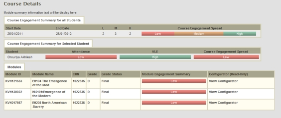
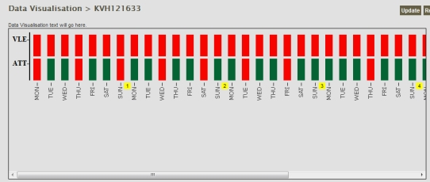
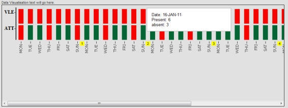
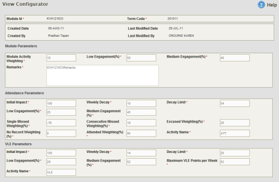

STAR-Trak: NG
STAR-Trak: NG developed a dashboard, which amongst many other things, allows staff and
students to see how their actions compare to other members of the same cohort and correlations
between those actions and later outcomes (module and degree results). The aim is to provide an
early warning to both staff and students and to enable appropriate interventions that may boost
students' performance. To do this they look at each student's performance and compare it against
those of the whole cohort using a set of criteria to weigh the different aspects of this. Students can
both view the results on their personal dashboard as shown below and, if they want, receive email
warnings when their status changes together with weekly reminders of their status for each
module.

Personal dashboard from STAR-Trek: NG
Tutors are also able to look at the overall performance of students on particular activities, and then
drill down and see who has, and has not been active.

Engagement in studies: use of VLE and attendance at lectures

Engagement in studies: use of VLE and attendance at lectures showing attendance
figures for Sunday Week 2.
In order to determine students' status it is necessary to configure the system to understand how
important various attributes of performance are. For instance, missing a single lecture might not be
very significant, whilst missing two consecutive ones might be a much more significant indicator of
concern. Similarly, missing a recent lecture might be significant, but four or five weeks later this
might be of only marginal interest. The criteria will vary between courses. For instance in distance
courses the use of the VLE may be more significant than for campus based courses. They have
therefore developed a tool that allows lecturers to specify the importance of each type of learning
activity and how that importance decays with time. It is likely that there will be a need for a set of
standardised templates for different types of course and different subject areas and that significant
training will be required to correctly configure the tool. Equally, it may be possible to use historical
data to arrive at appropriate criteria where modules have been run sufficiently long with enough
students to ensure that the data is meaningful.

STAR-Trak: NG configurator tool